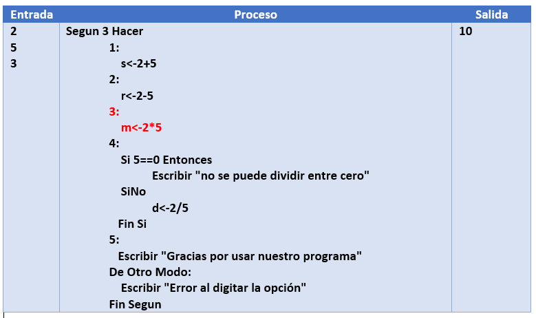
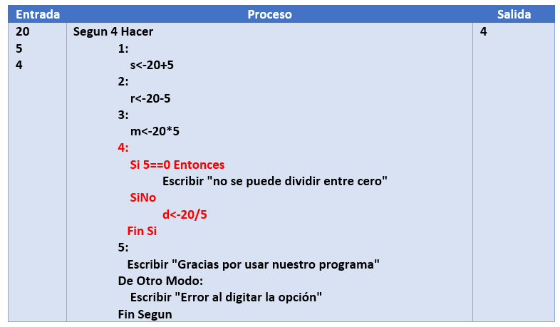
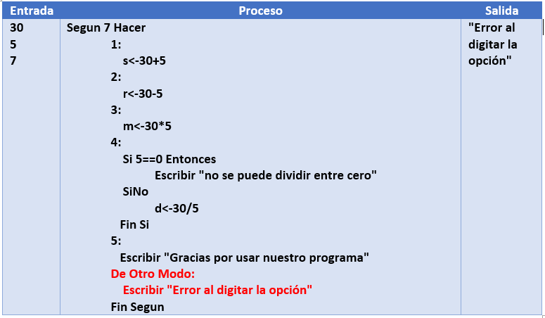
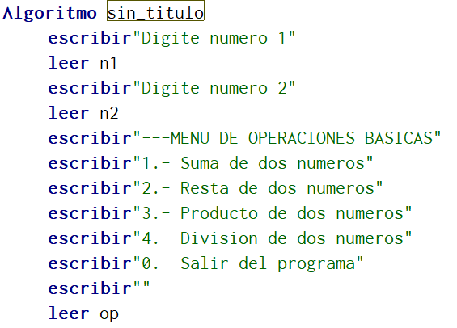
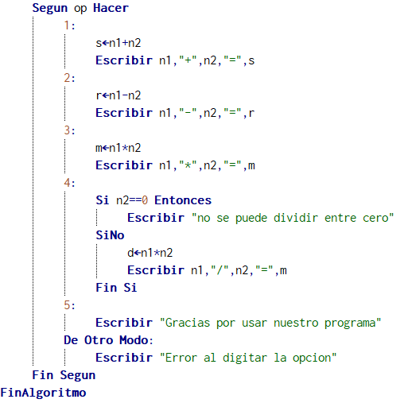

Realizar un menú de opciones que tenga la siguiente información
----Menú de operaciones básicas---
1.- Suma de dos números
2.- Resta de dos números
3.- Producto de dos números
4.-División de dos números
0.-Salir del programa
Nota: tenga en cuenta que la división entre cero no es valida
Análisis

Prueba de escritorio
Prueba 1
prueba 2

Prueba 3

Pseudocodigo
|  |  |
| Parte 1 | Parte 2 |